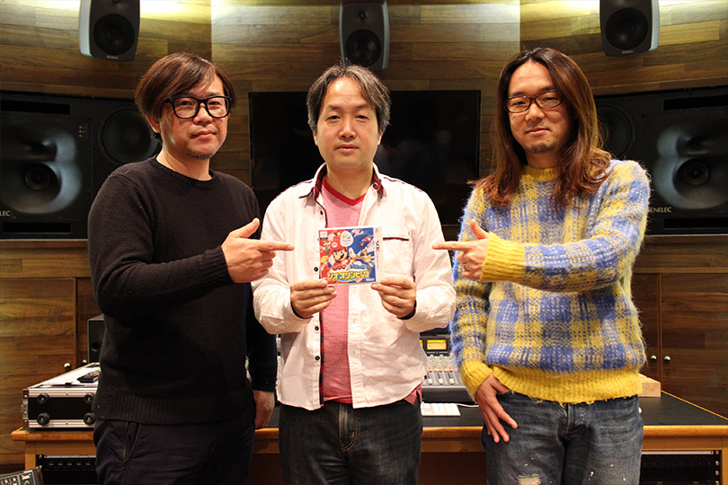

『マリオ＆ソニック AT リオオリンピック™』（3DS版）発売記念！サウンドインタビュー[後編]
メッセージ
大谷 そろそろまとめに入りたいと思います。中川さん、床井さん、最後にメッセージをお願いします。
中川 今回はレコーディングに力を入れました。テーマ曲をはじめ本場リオで収録して来た楽曲たち、その他日本でも本当にたくさんのミュージシャンに力を貸して頂いて制作しました。総勢100名は越えています！お陰様で、隅から隅までブラジル感満載の、特色のあるサウンドに仕上がりました。ゲーム本編を楽しんでいただきつつ、音楽も一緒に堪能していただければうれしく思います。
床井 リオオリンピックならではの熱い競技の数々をぜひ楽しんで下さい。そして、リオの街を堪能出来るストーリーでもしっかりとブラジル音楽にこだわらせて頂きました。天性のリズムや躍動感のあるサウンドを感じて頂ければ嬉しいです。
大谷『マリオ&ソニック』シリーズでも、最も特色のあるサウンドに仕上がっていると思います！本日はありがとうございました。
中川・床井 ありがとうございました。
2週に渡り掲載させていただきました今回のサウンドインタビューいかがでしたでしょうか？+ボタンのついた現地の写真をクリックすると、解説コメントも掲載されていますので是非チェックしてみて下さい。『マリオ＆ソニック』シリーズのサウンドも「ソニック」シリーズ同様、たくさんのこだわりが詰め込まれていますので、そのことを伝えたいと思い企画しました。ブラジル感満載のサウンドを是非チェックしてみてください！今年はこのような特別企画もやっていきたいと思っていますので、引き続きサウンドコラムをよろしくお願いします。
最後に、今回のコラムで紹介させて頂きました、ブラジル収録のメインテーマが使用されているWii U『マリオ&ソニック AT リオオリンピック™』オープニング映像が公開されていますので、合わせてお楽しみ下さい！ではまた！
→ニンテンドー3DS『マリオ＆ソニック AT リオオリンピック™』公式サイト
TM IOC/RIO2016/USOC 36USC220506. Copyright © 2016 International Olympic Committee ("IOC"). All rights reserved. SUPER MARIO characters © NINTENDO. SONIC THE HEDGEHOG characters © SEGA.